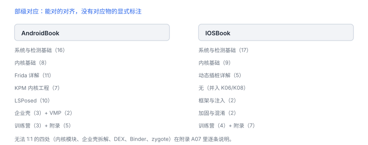

章节对标：AndroidBook ↔ IOSBook
八个部分逐条对上 AndroidBook，删掉的与保留的都写清楚
这次不是改标题，而是按 AndroidBook 的能力阶梯重排目录：留下能落到字节、结构、命令与观测上的章节，把安全工程与产品化内容移出正文。
1. 部级对应
| AndroidBook | 讲数 | IOSBook 对应 | 讲数 |
|---|---|---|---|
| 第一部 · 系统与检测基础 | 16 | 第一部 · 系统与检测基础 | 17 |
| 第二部 · 内核基础 | 8 | 第二部 · 内核基础 | 9 |
| 第三部 · Frida 详解 | 11 | 第三部 · 动态插桩详解 | 5 |
| 第四部 · KPM 内核工程 | 7 | 无（iOS 无第三方内核模块） | 0 |
| 第五部 · LSPosed | 10 | 第五部 · 框架与注入 | 2 |
| 第六部 · 企业壳实战 | 3 | 无独立部（并入 H01 加固） | 0 |
| 第七部 · 混淆与 VMP | 2 | 第六部 · 加固与混淆 | 2 |
| 第八部 · 实战训练营 | 3 | 第七部 · 实战训练营 | 4 |
| 附录 | 5 | 附录 | 7 |
| 合计 | 65 | 52 |
2. 第一部的逐讲对应
| Android 讲 | IOSBook 讲 | 对应关系 |
|---|---|---|
| APatch 的 root 原理 | 01 越狱到底改了什么 | 内核补丁与签名校验 |
| 手机启动过程 | 02 启动链与信任建立 | 逐级验证与交接 |
| 硬件证明（TEE） | 03 设备证明 | 安全隔区与 App Attest |
| root 检测 | 04 注入与越狱检测 | 信号、可靠性、误报 |
| linker 启动过程 | 05 dyld 与程序加载 | 依赖闭包与绑定 |
| ptrace 原理 | 06 ptrace 与调试附加 | 请求号、任务端口、约束 |
| zygisk 原理 | 07 注入链 | 加载 agent 的五个阶段 |
| hook 原理 | 08 hook 原理 | 改数据 / 改方法表 / 改指令 |
| dex 详解 | 15、16 Mach-O 两讲 | 文件结构、加载命令、段 |
| Java Hook 原理 | 13 运行时元数据 | 方法表与选择子 |
| IPC（Binder） | 14 Mach IPC | 端口权能 |
| frida 源码讲解 | 第三部 5 讲 | 时机、Interceptor、Stalker |
| 注入检测 | 04 与 F05 检测面 | 可观测信号 |
| 自动化（scrcpy） | 移出正文 | 见归档说明 |
| 基础 hook 脚本 | 08、09、10 | 从静态到运行时 |
IOSBook 第一部比 AndroidBook 多出的三讲是 09–12：静态侦察、调试器观察、ARM64 反汇编、完整分析。它们对应 AndroidBook 分散在 ptrace、hook、KPM 三部里的“怎么读代码”。

3. 删掉的 33 讲
| 类别 | 讲数 | 例子 |
|---|---|---|
| 应用安全工程 | 8 | 威胁建模、数据保护、网络安全、隐私日志、供应链、WebView、安全更新、服务端授权 |
| 防护与兼容工程 | 6 | 纵深防御、测试矩阵、失败模式、事件响应、发布检查、威胁控制 |
| 产品与平台说明 | 7 | 应用生命周期、Entitlements、隐私权限、文件保护、Keychain、平台 API、系统组件地图 |
| 二进制杂项 | 5 | 动态依赖、通用二进制、符号化、构建产物、诊断日志 |
| 开发向内核 | 4 | XNU 概览、QoS 调度、内存压力、并发正确性 |
| 逆向实践冗余 | 3 | 分析工作台、自动化、运行时测试策略 |
这些页面没有删除，而是移到仓库的 archive/ 目录，页面不再出现在导航与分页里。需要时可以取回，或按需改写成“为逆向服务”的版本。
4. 无法 1:1 的四处
- 内核模块（KPM）：iOS 不允许第三方内核模块，只能讲 kernelcache 与符号、调试限制。
- LSPosed：没有同名框架，用 tweak 生命周期与互操作边界替代。
- 企业壳：不针对具体商业壳拆解，只保留加固手段的识别与评估。
- DEX / Binder / zygote：分别对应 Mach-O、Mach 端口、注入链，名字不同但问题同构。
统计当前目录规模（本仓库）
grep -c "^ { no:" nav.js
ls ch/*.html | wc -l
ls archive/ch/*.html | wc -l缺口要显式
把“iOS 没有对应机制”和“还没写”分开标注，读者才知道哪些是设计选择、哪些是待补。
把“iOS 没有对应机制”和“还没写”分开标注，读者才知道哪些是设计选择、哪些是待补。
5. 当前规模
| 指标 | 数值 | 说明 |
|---|---|---|
| 讲数 | 59 | 8 部 + 附录，全部可访问 |
| 配图 | 78 | 每讲至少一幅，01/05/11/F02 各两幅 |
| 表格 | 170 | 中位 3 张/讲，最低 2 张 |
| 代码块 | 107 | 含 32 处真实工具输出 |
| 要点框 | 54 | 每讲至少一个 |
| 自测题 | 181 | 中位 3.5 题/讲 |
图密度 1.08 幅/讲，代码密度 1.44 段/讲。与 AndroidBook 的差距主要在“每讲 3–4 段代码、3–4 个要点框”，下一步按此补齐。
6. 自测
- 为什么把“应用安全工程”整部移出正文，而不是压缩成两讲？
- IOSBook 第一部的 09–12 讲，对应 AndroidBook 里哪些分散内容？
- “无法 1:1”的四处，各自用什么机制替代？